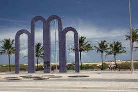

praia de atalaia

na orla de atalaiaorla da atalaia existe opções de lazer como bares e casas de danças e musica, além de barracs
de água de coco e quadras de basquete
futebol,tênis e uma pist de skate concidera uma das mais
bonitas do brasil
oferece aos cidadõos e turistas o que ha de melhor em lazer e entreterimento.
Roteiro Turistico em 1 dia
- Café da manha em uma das barracas da orla.
- Caminhada ate os arcos da atalaia para fotos.
- Vista ao oceanário de aracaju (projeto tamar).
- Almoço com frutos do mar.
- Tarde livre para bnho de mar e esportes.
- Fim de tarde com água de coco observando o pôr do sol.